السلسلة 13
السيارة (صنف B) · 40 سؤال بالصوت. حاول تجاوب بوحدك، من بعد شوف الجواب.
السؤال 1
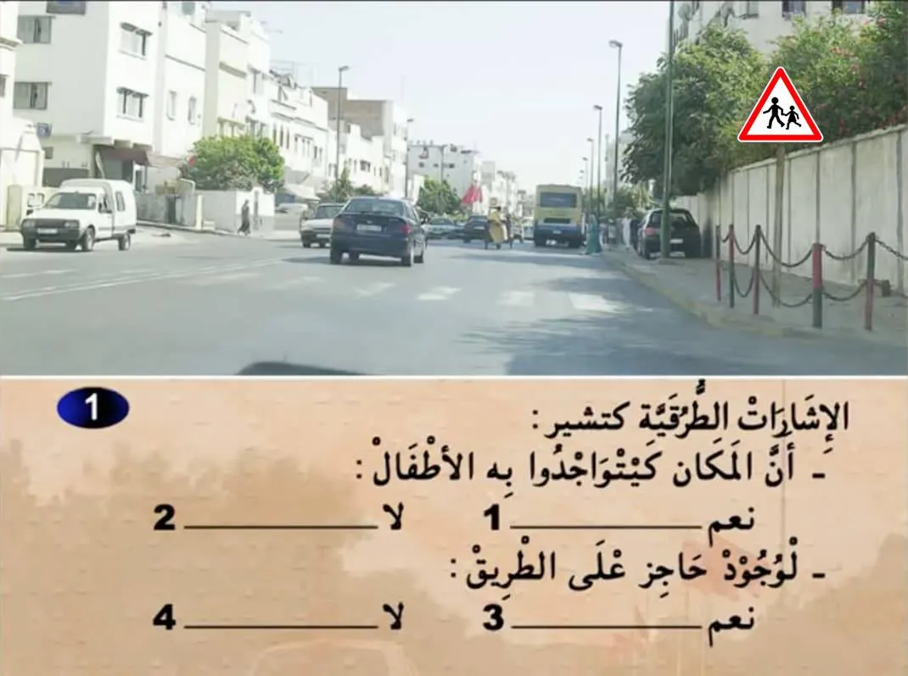
بيّن الجواب
الجواب الصحيح: 1 و 4
الإشارة الطّرقية العمودية على اليمين فهي علامة انتباه الخطر وجود مدرسة على بعد 50 متر (50 متر لأننا نتواجد داخل التجمّع السّكاني) وبما أننا سوف نجد مدرسة إذن إحتمال كبير وجود أطفال. والإشارة الطّرقية لا تشير ولا تعني أبدا وجود حاجز.
السؤال 2
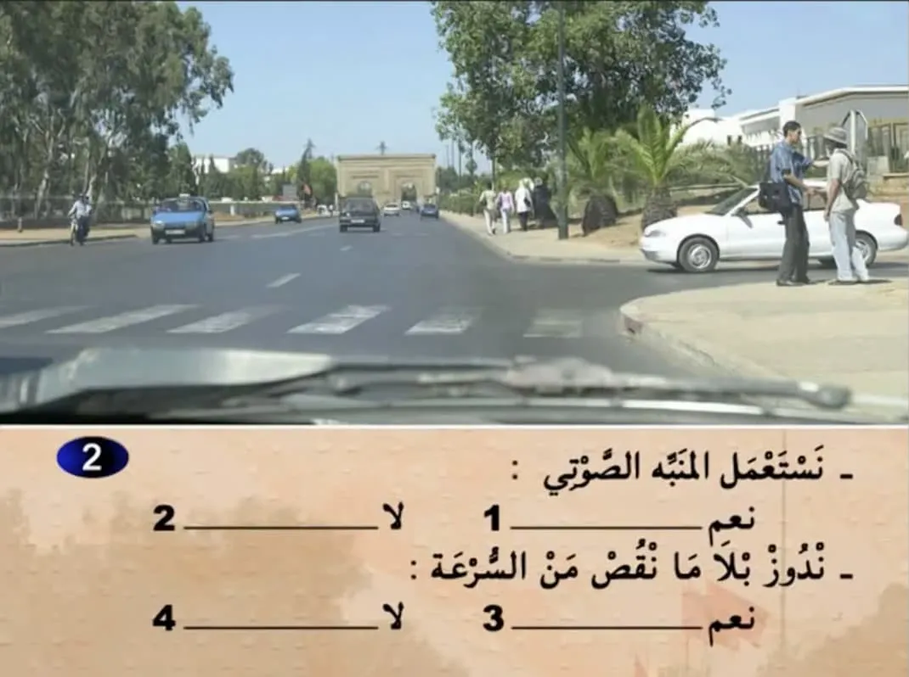
بيّن الجواب
الجواب الصحيح: 2 و 4
داخل المدينة لا نستعمل المنبّه الصوتي إلاّ في وجود خطر أو للضرورة القصوى، وفي هذه الحالة لا يوجد هنالك خطر لكي نستعمل المنبّه الصوتي. بالنسبة للمرور فنحن نتواجد في ملتقى الطّرق، ودائما في ملتقيات الطرق يجب الإنقاص من السّرعة.
السؤال 3
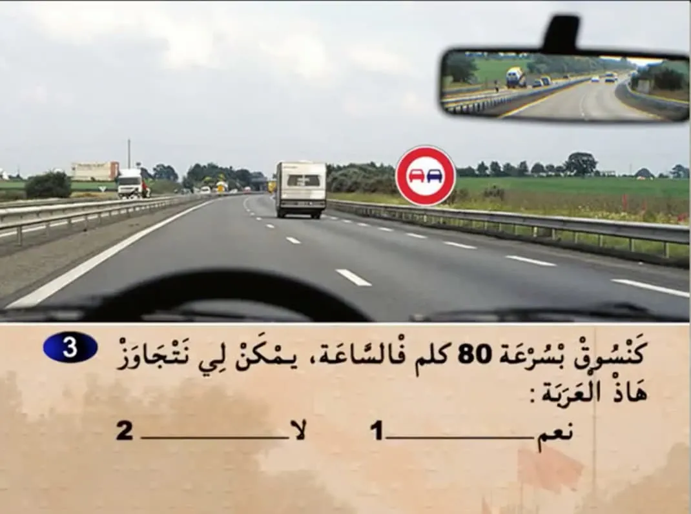
بيّن الجواب
الجواب الصحيح: 2
نتواجد في طريق سيّار (نعرف أنه طريق سيّار بالخط المتّصل على اليسار) والسرعة القصوى فيه محدّدة في 120 كلم في الساعة، التّشوير الأفقي الخط المتقّطع يسمح لي بعملية التّجاوز، لكن نحتكم في هذه الحالة إلى الإشارة الطّرقية العمودية والتي تمنعنا من التجاوز. إذن لا يمكننا تجاوز هذه العربة.
السؤال 4
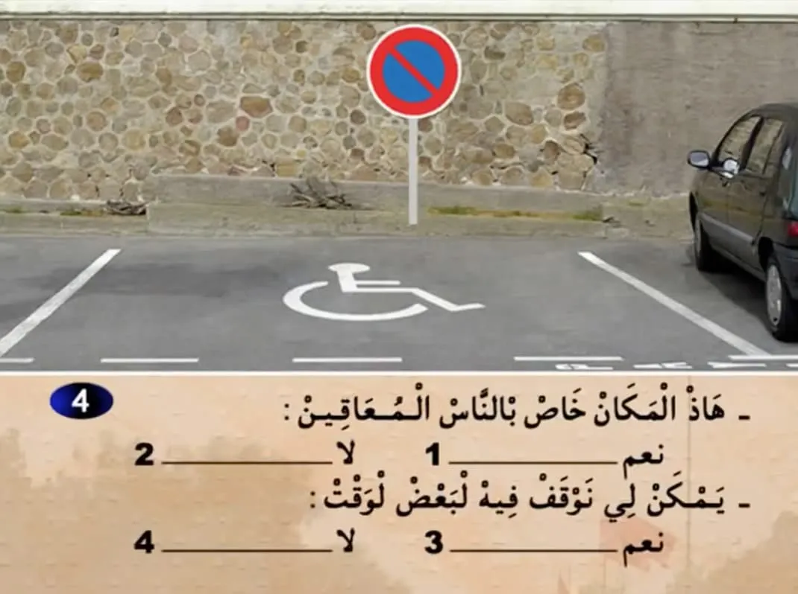
بيّن الجواب
الجواب الصحيح: 1 و 4
بالنسبة لهذا المكان فهو خاص بالأشخاص ذوي الاحتياجات الخاصة (المعاقين)، وفي الأماكن الخاصة لا يمكننا الوقوف أو التوقّف.
السؤال 5
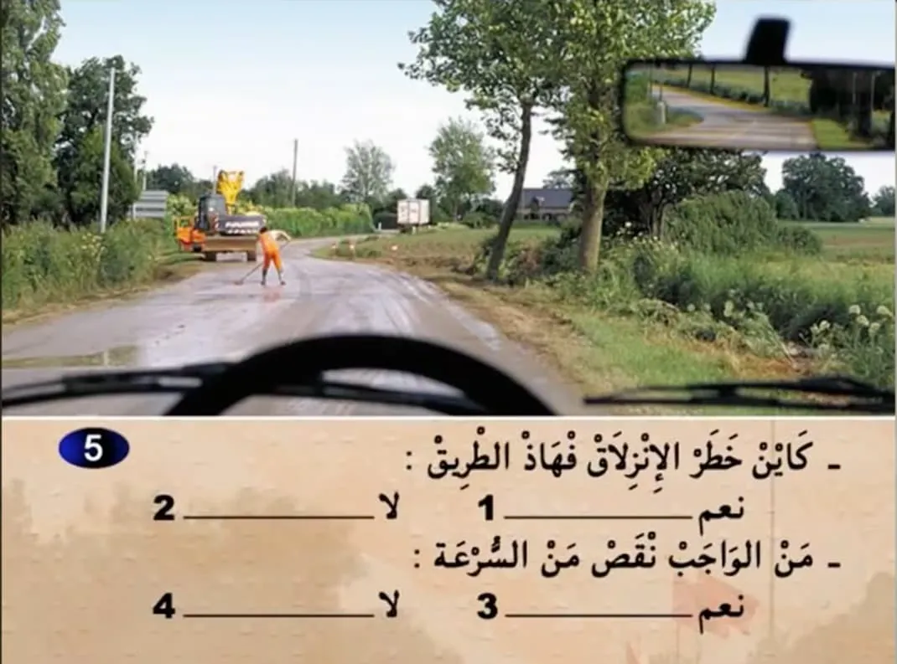
بيّن الجواب
الجواب الصحيح: 1 و 3
كما توضّح الحالة الطّرقية فهي مبللة بالماء، في هذه الحالة يوجد خطر الانزلاق لأن الأرض مبللة، كما أنه من الواجب عليّ الإنقاص من السرعة لأنه يوجد أشغال، وأيضا لكي أخفف من خطر الانزلاق، لأن السرعة عامل من عوامل الانزلاق عندما تكون الطريق مبللة.
السؤال 6
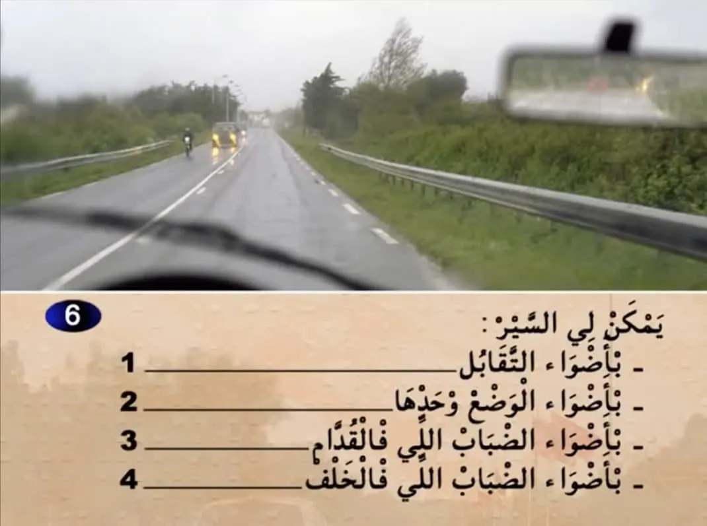
بيّن الجواب
الجواب الصحيح: 1 و 3
أثناء هطول الأمطار، نقوم بالسّير بإستعمال أضواء التّقابل وأضواء الضباب الأمامية، بالاضافة لإمكانية إستعمال أضواء الوضع مع أضواء التقابل او الضبابة، لا يمكن إختيار الإختيار الثاني أضواء الوضع وحدهم لانه لا يمكننا السير بأضواء الوضع وحدهم، من الواجب في مثل هذه الحالات مثل المطر ان نقوم بإستعمال أضواء الوضع مع أضواء التقابل إذا كنا نريد إستعمال أضواء الوضع، ولا يمكن إستعمال أضواء الوضع وحدهم والسير بهم في مثل هكذا أجواء ممطرة (لو كان الإختيار أضواء الوضع، بدون كلمة وحدهم فيمكننا إختيارهم) .
⚠️ ملاحظة: يمكن استعمال أضواء الوضع في آن واحد مع أضواء الطريق وأضواء التقابل والأضواء الخاصة بالضباب، ويمكن كذلك استعمالها وحدها عند وقوف المركبة أو توقفها أو عندما تكون ظروف الإنارة على الطرق، ماعدا الطريق السيار أو الطرق ذات المسالك الخاصة. الجواب الصحيح هو رقم 1 و 3.
السؤال 7
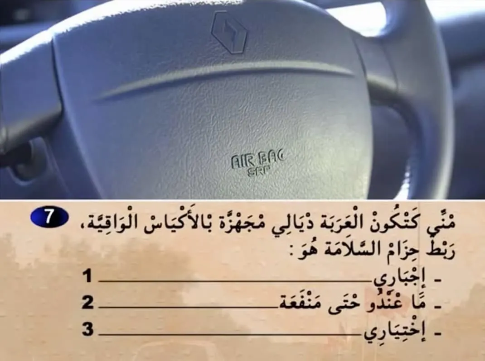
بيّن الجواب
الجواب الصحيح: 1
الكيس الواقي في السيارة (Airbag) فهو لا يعوّض حزام السلامة بالنسبة للسائق وبالنسبة للراكبين أيظا، الكيس الواقي في السيارة (Airbag) هو يخفف من خطر الإصطام فقط ولا يعوّض حزام السلامة أي أنه تكميلي لحزام السلامة ولا يعوّضه. إذن ربط حزام السّلامة فهو أمر إجباري.
السؤال 8
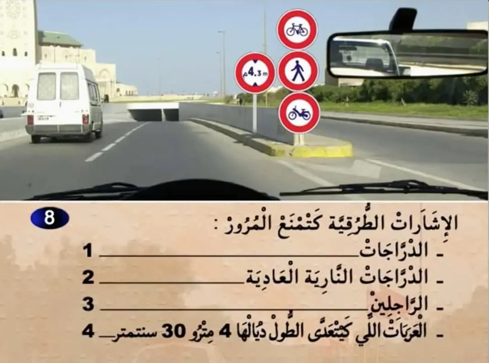
بيّن الجواب
الجواب الصحيح: 1 و 2 و 3
بالنسبة للإشارات الطّرقية العمودية فهي تشير إلى المنع، والمنع يتم تطبيقه من عند العلامة. تشير هذه الإشارات الطّرقية إلى أنه ممنوع مرور الدراجات، ممنوع مرور الدراجات النارية العادية وكذلك ممنوع مرور الراجلين. بالنسبة للعلامة الطرقية التي تحتوي على 4 أمتار و 30 سنتمتر فهي تعني ممنوع على العربات التي يتعدى علوّها 4 امتار و 30 سنتمتر من المرور وليس الطول (يوجد فرق بين العلو والطّول).
السؤال 9
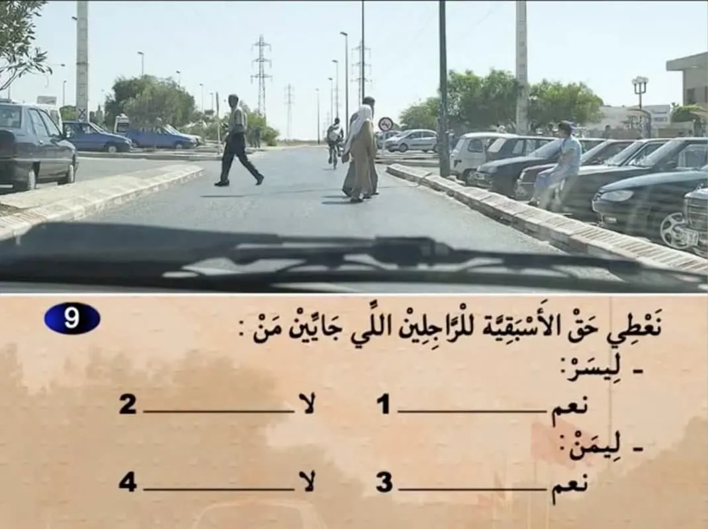
بيّن الجواب
الجواب الصحيح: 1 و 3
عندما لا يوجد شرطي ينظّم حركة المرور ولا توجد إشارات ضوئية كذلك فدائما يجب الانتباه إلى الرّاجلين. عندنا نتواجد في حالة مرور راجلين فحق الأسبقية للرّاجلين القادمين من الجهة اليسرى وكذلك القادمين من الجهة اليمنى.
السؤال 10
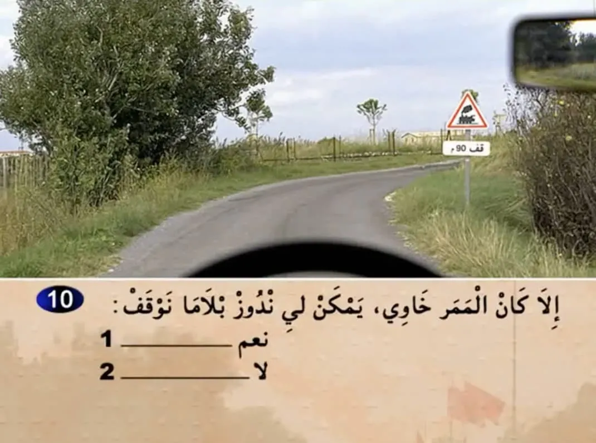
بيّن الجواب
الجواب الصحيح: 2
يوجد إشارة طرقية تعلمني على أنه بعد 90 متر يجب عليّ الوقوف. دائما علامة قف يجب عليّ احترامها حتى وإن لم نجد سيارات وحتى وإن كانت الطريق فارغة فيجب علينا الوقوف.
السؤال 11
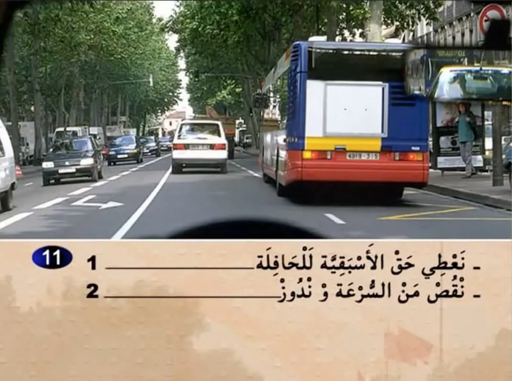
بيّن الجواب
الجواب الصحيح: 1
بالنسبة للحافلة فتستعد للاندماج في حركة السّير كما يشير مؤشر تغيير الاتجاه، كما أن الطريق مزدحم، فلا بأس بإعطائها حق الأسبقية لكي تقوم الحافلة بالمرور والاندماج في حركة السّير.
السؤال 12
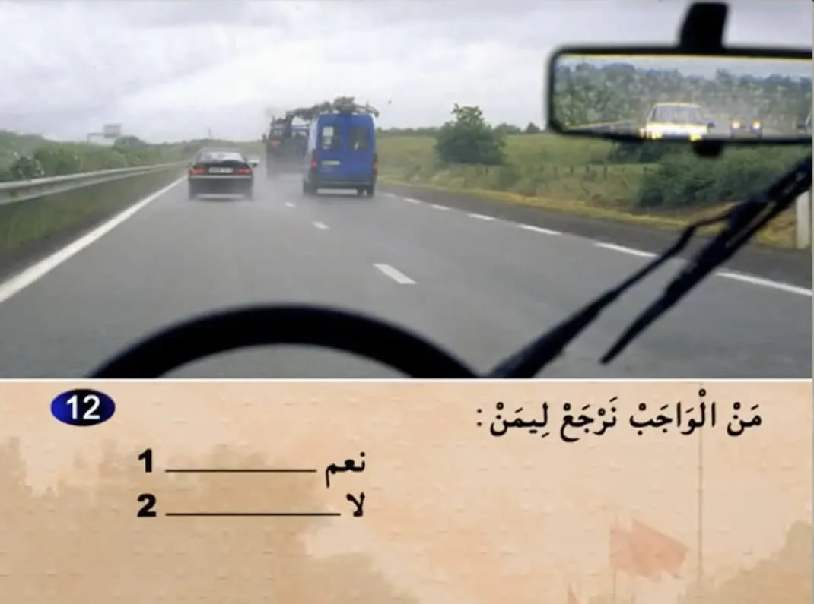
بيّن الجواب
الجواب الصحيح: 2
نتواجد في طريق سيّّار كما يوضح التّشوير الأفقي الخط المتّصل الموجود على اليسار، أي أن الطريق ذات إتّجاه واحد، كما أنه لا يوجد علامات طرقية تجبرني على الانحياز لليمين، في الطريق السيّار يمكننا تجاوز عربات أثناء قيام سيّارة أخرى بعملية تجاوزهم (عكس الطريق الوطنية). إذن ليس من الواجب عليّ الانحياز لليمين.
السؤال 13
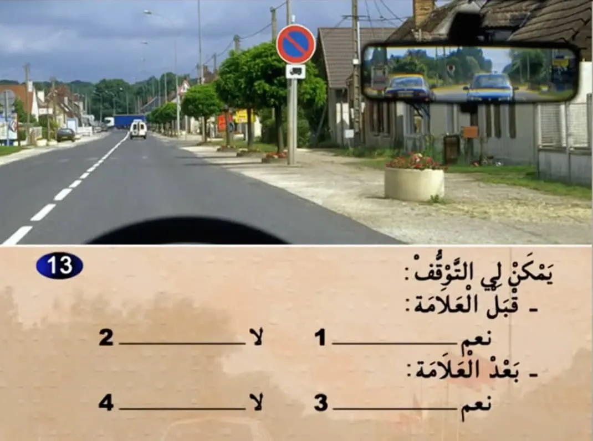
بيّن الجواب
الجواب الصحيح: 1 و 3
ممنوع على الشاحنات التوقّف قبل العلامة أو بعد العلامة كما تشير إليه العلامة التكميلية أسفل علامة المنع، وفي هذه الحالة علامة المنع لا تخص السّيارات، إذن في هذه الحالة يمكنني التوقّف قبل العلامة ويمكنني التوقّف بعد العلامة.
السؤال 14
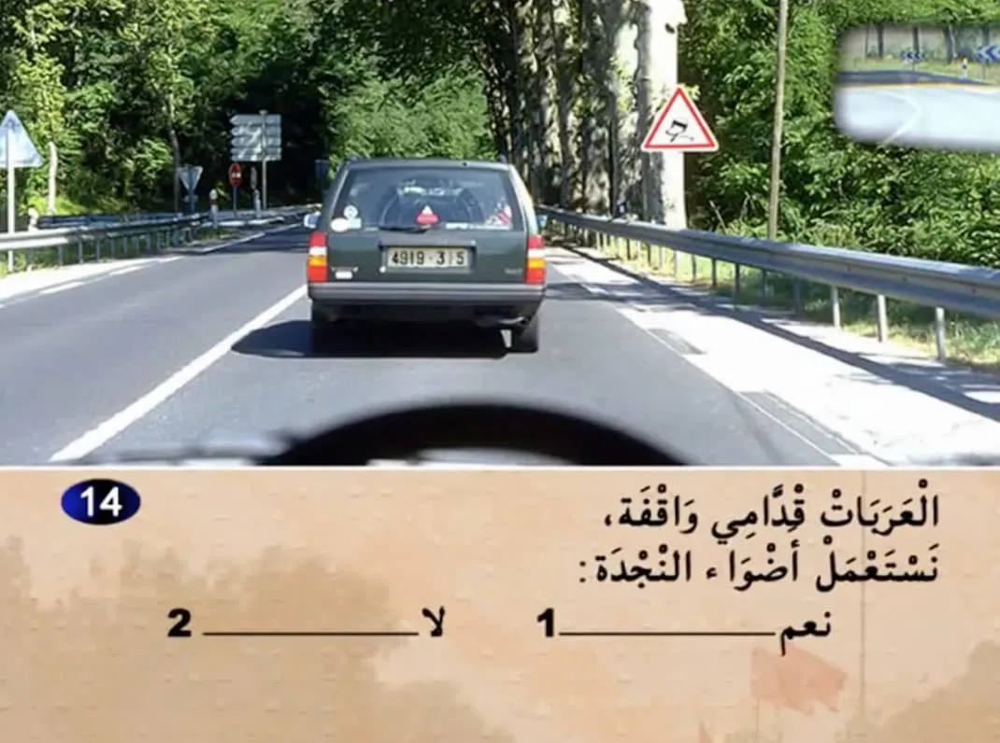
بيّن الجواب
الجواب الصحيح: 1
إذا كانت العربات التي أمامي واقفة ولا توجد عربات من الخلف فأقوم بإستعمال أضواء النجدة. إذا كنت في الوسط أو مثلا توجد سيارات من ورائي لا أستعمل أضواء النجدة. في هذه الحالة العربات واقفة ولا توجد سيارات من ورائي إذن أستعمل أضواء النجدة.
السؤال 15
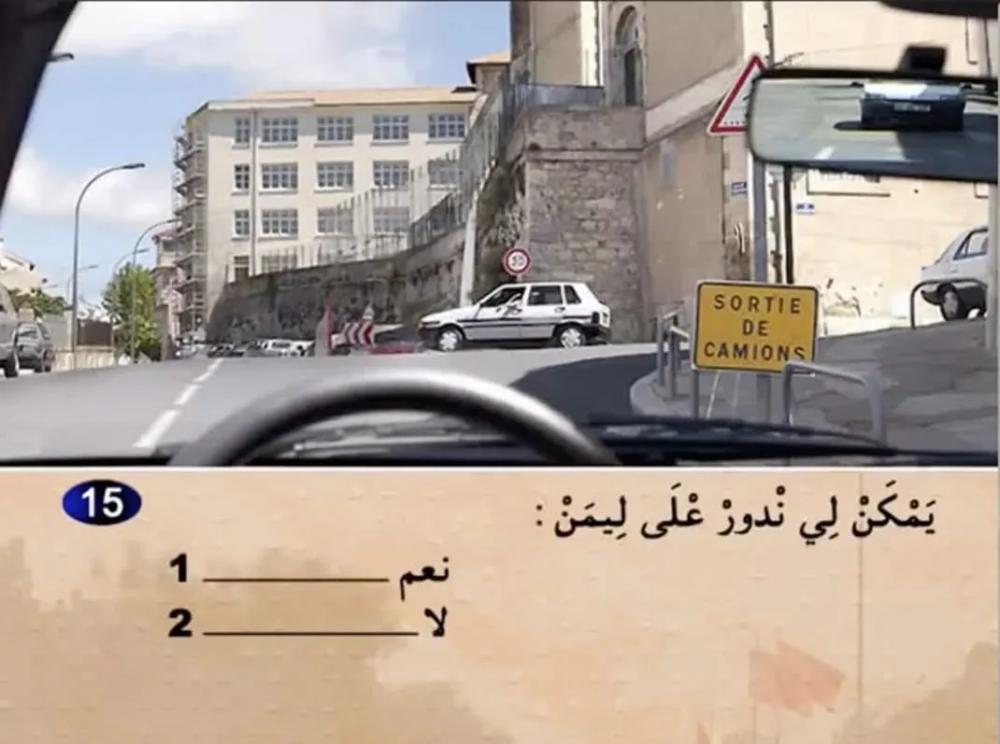
بيّن الجواب
الجواب الصحيح: 1
لا يوجد خط متّصل في الشارع الموجود على اليمين والذي يعني أنه لا يمكنني المرور، كذلك لا توجد علامة طرقية تمنعني من الانعطاف على اليمين، الإشارة الطّرقية الصفراء (مؤقتة فهي تشير إلى خروج الشاحنات). إذن بما أنه لا يوجد تشوير طرقي يمنعني من الانعطاف إلى اليمين فيمكنني الانعطاف على اليمين.
السؤال 16
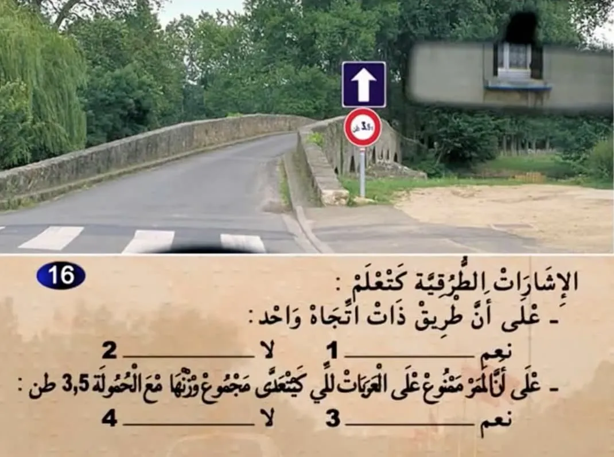
بيّن الجواب
الجواب الصحيح: 1 و 3
بالنسبة للإشارة الطّرقية الأولى فهي تعني أن الطريق ذات إتّجاه واحد، وبالنسبة للإشارة الطّرقية الثانية فهي تعني على أن العربات التي يتعدّى مجموع وزنها مع الحمولة 3.5 طن ممنوع عليها المرور في هذه الطريق.
السؤال 17
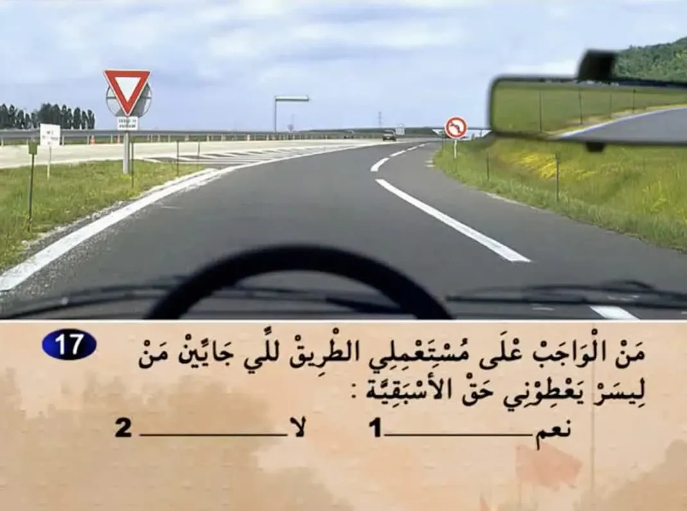
بيّن الجواب
الجواب الصحيح: 2
نتواجد الان في مسلك الاندماج، و في هذه الحالة دائما ما نعطي حق الأسبقية للعربات القادمة من الجهة اليسرى قبل عملية الاندماج، لأن سرعة العربات القادمة من الجهة اليسرى تكون كبيرة لذلك لا يمكنهم إعطائنا حق الأسبقية.
السؤال 18
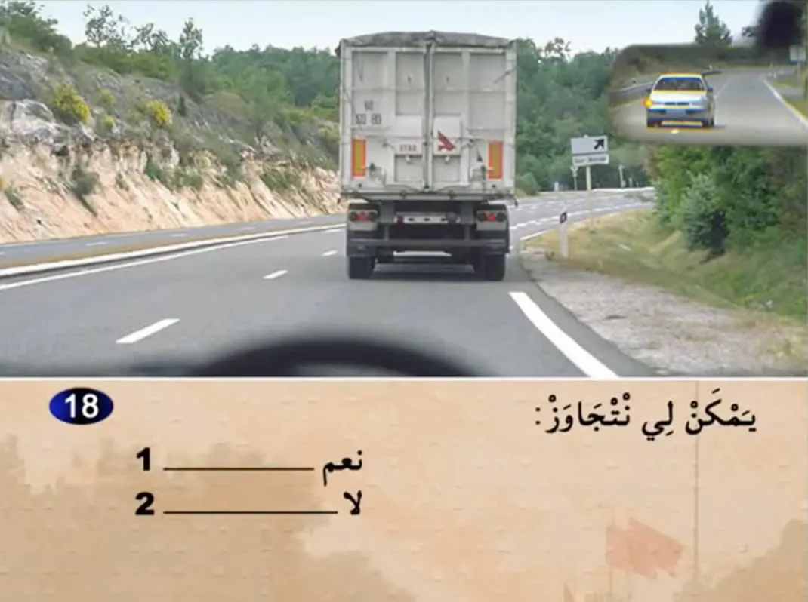
بيّن الجواب
الجواب الصحيح: 2
التّشوير الأفقي الخط المتقطّع يسمح لي بعملية التجاوز، لكن في هذه الحالة لا يمكنني التّجاوز لأنه توجد سيارة من الخلف تستعد لعملية التجاوز. إذن لا يمكنني التّجاوز.
السؤال 19
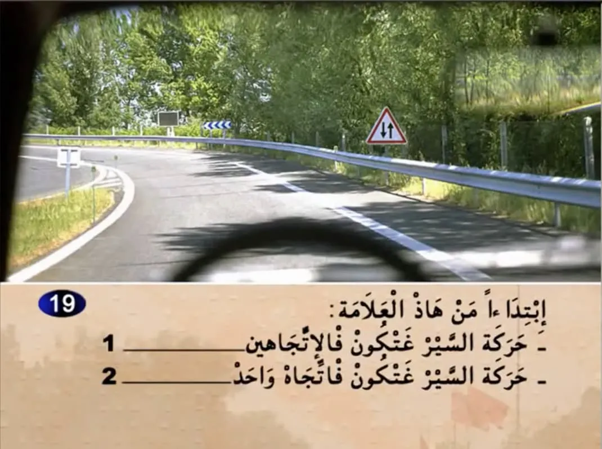
بيّن الجواب
الجواب الصحيح: 1
بالنسبة للإشارة الطّّرقية فهي تشير إلى أن ابتداءا منها فإن حركة السّير سوف تكون في الاتّجاهين. (بالنسبة لعلامات الخطر نطبقّها من على بعد 150 متر، لكن هذه هي العلامة الطّرقية الوحيدة التي نقوم بتطبيقها من عند العلامة وليس بعد 150 متر).
السؤال 20
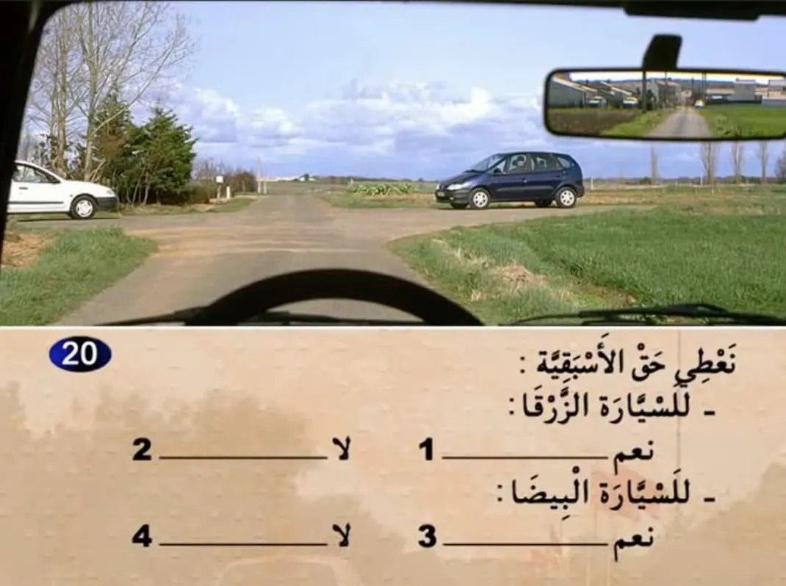
بيّن الجواب
الجواب الصحيح: 1 و 4
نتواجد في ملتقى الطّرق، عندما لا توجد إشارات ضوئية تنظّم حركة السّير أو لا توجد علامات طرقية أو لا يوجد شرطي مرور ينظّم حركة السّير، ففي هذه الحالة الأسبقية دائما للعربات القادمة من الجهة اليمنى. إذن في هذه الحالة أعطي حق الأسبقية للسّيارة الزرقاء لأنها تتواجد على الجهة اليمنى، ولا أعطي حق الأسبقية للسّيارة البيضاء لأنها تتواجد على الجهة اليسرى.
السؤال 21
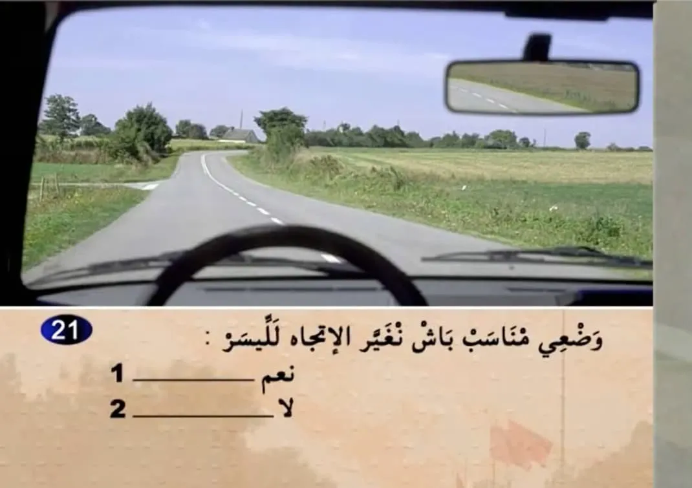
بيّن الجواب
الجواب الصحيح: 2
عندما أريد تغيير الاتجاه إلى الجهة اليسرى فيجب أن أتواجد في المسلك على اليمين لكي أستطيع الانعطاف بسهولة وكذلك لكي أسمح للعربات القادمة من الاتّجاه المعاكس من المرور في مسلكهم الخاص.
السؤال 22
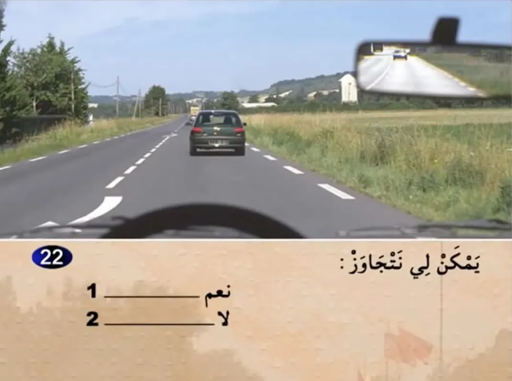
بيّن الجواب
الجواب الصحيح: 1
التّشوير الأفقي الخط المتقطّع يسمح لي بعملية التجاوز، بالنسبة لأسهم الانحياز فهي للعربات القادمة من الإتّجاه المعاكس ولا تعنيني. إذن يمكنني أن أتجاوز.
السؤال 23
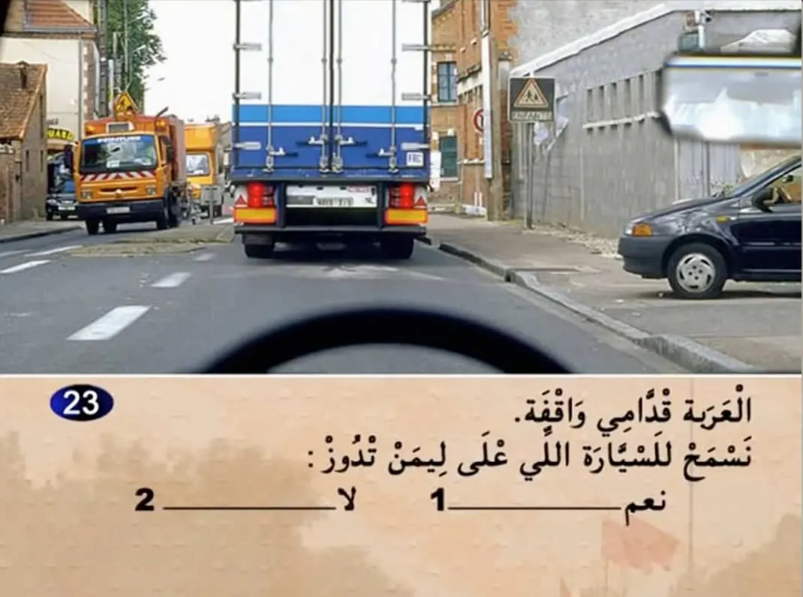
بيّن الجواب
الجواب الصحيح: 1
بما أن حركة المرور متوقّفة والعربة التي توجد أمامي متوقّفة، لابأس بأن أسمح بالسيارة المتواجدة على الجهة اليمنى بالمرور، السياقة هي سلوك قبل كل شيئ، كما لو أنني قمت بالتقدّم نحو الأمام فسوف أعرقل حركة السير أكثر لأن العربات التي تتواجد أمامي واقفة. إذن أسمح للسيارة المتواجدة على الجهة اليمنى بالمرور.
السؤال 24
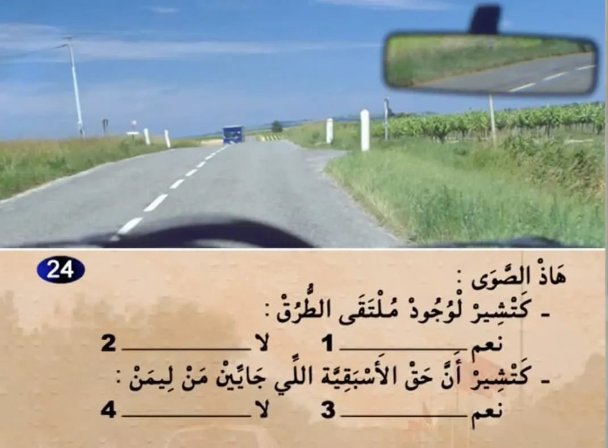
بيّن الجواب
الجواب الصحيح: 1 و 4
بالنسبة للإشارات الطرقية الصِّوى فهي تشير إلى وجود ملتقى الطرق، كما أنها لا تشير ولا تعني القاعدة التي تطبّق عند ملتقى الطّرق. تشير فقط إلى ملتقى الطّرق.
السؤال 25
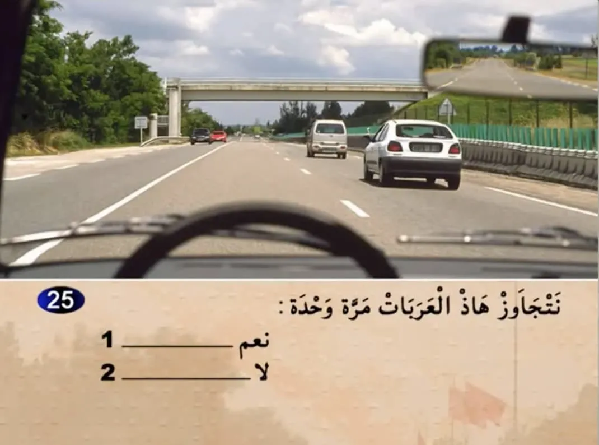
بيّن الجواب
الجواب الصحيح: 1
عند وجود مسلكين ذي إتجاه واحد ووجود تشوير أفقي خط متّصل والذي يشير إلى طريق ذات إتّجاه واحد (السيارات التي في الاتجاه المعاكس لا يمكنها التجاوز لأن لديها خط متّصل) في هذه الحالة يمكنني أن أقوم بعملية التجاوز لأكثر من عربة مرّة واحدة.
السؤال 26
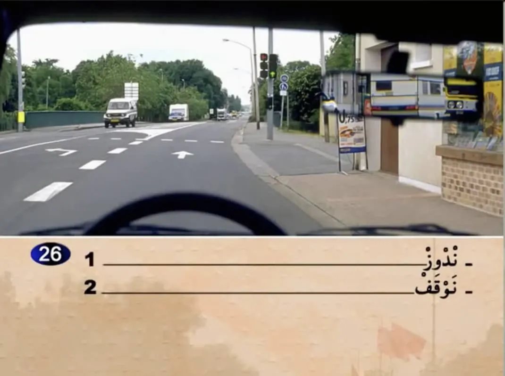
بيّن الجواب
الجواب الصحيح: 1
الإشارة الضوئية تشير إلى أنه يمكنني مواصلة السّير للأمام.
السؤال 27
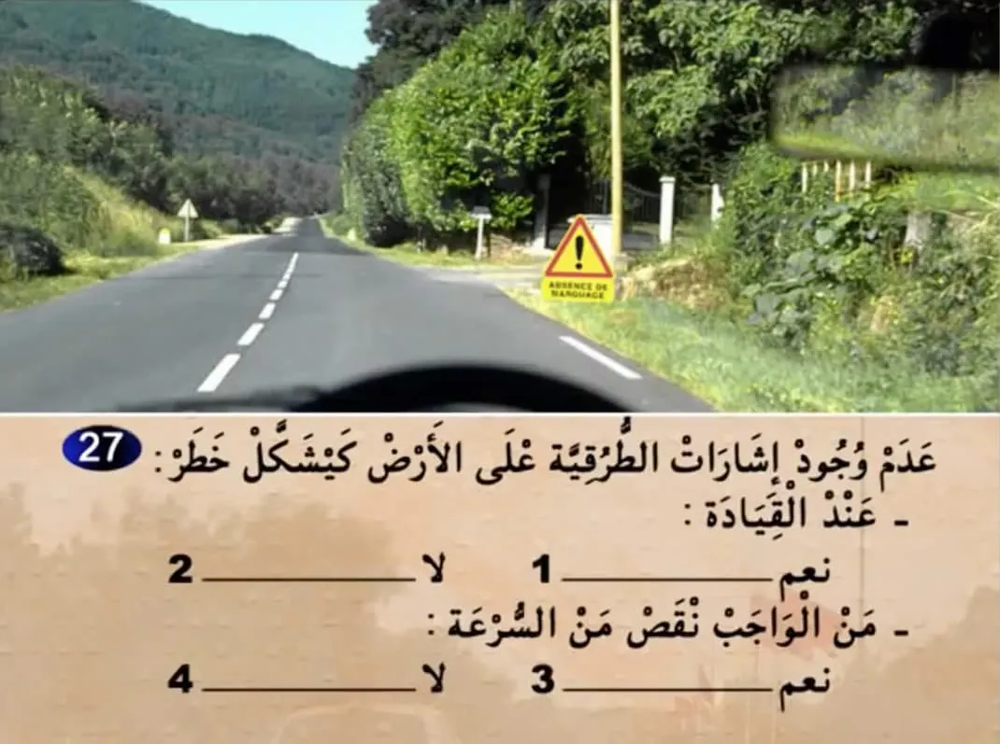
بيّن الجواب
الجواب الصحيح: 1 و 3
عدم وجود إشارات طرقية على الأرض فهي تشكل خطر وتزيد من نسبة حدوث حوادث سير عند القيادة، وبطبيعة الحال عندما لا توجد إشارات طرقية فمن الواجب عليّ الانتباه والإنقاص من السرعة.
السؤال 28
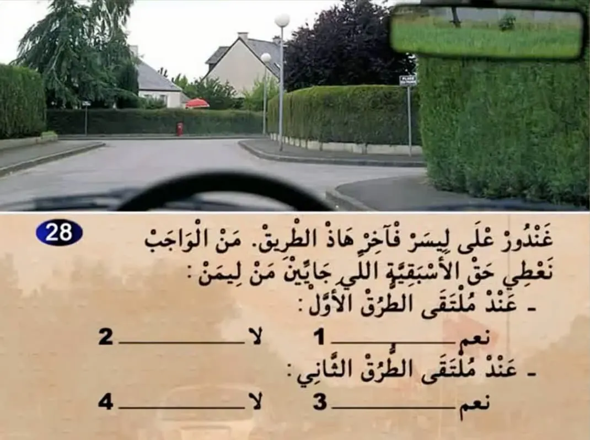
بيّن الجواب
الجواب الصحيح: 1 و 3
نتواجد في ملتقى الطّرق، عندما لا توجد إشارات ضوئية تنظّم حركة السّير أو لا توجد علامات طرقية أو لا يوجد شرطي مرور ينظّم حركة السّير، ففي هذه الحالة الأسبقية دائما للعربات القادمة من الجهة اليمنى. إذن في هذه الحالة من الواجب عليّ إعطاء حق الأسبقية في الملتقى الأول والثاني.
السؤال 29
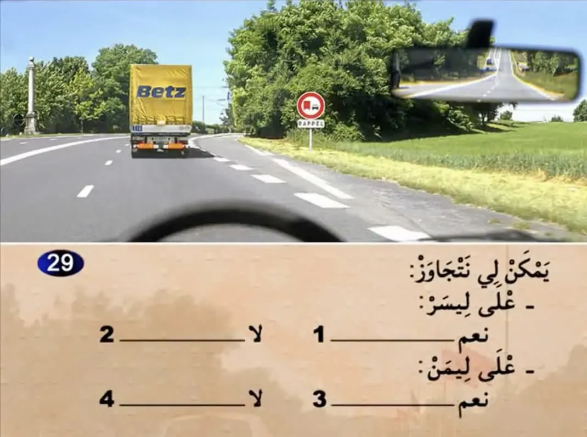
بيّن الجواب
الجواب الصحيح: 1 و 4
الإشارة الطّرقية العمودية فهي تمنع الشاحنات من القيام بعملية التجاوز وليس السيارات، إذن يمكنني التّجاوز لأن التّشوير الطّرقي الخط المتقطّع يسمح لي بالتجاوز من الجهة اليسرى، ولا يمكنني التجاوز من الجهة اليمنى لأنه ممنوع والتجاوز نقوم به من الحهة اليسرى فقط. (الحالة الوحيدة التي يمكننا من التّجاوز من الجهة اليمنى هي عندما تكون العربة تستعد للانعطاف على اليسار). إذن في هذه الحالة يمكنني التجاوز من الجهة اليسرى ولا يمكنني التّجاوز من الجهة اليمنى.
السؤال 30
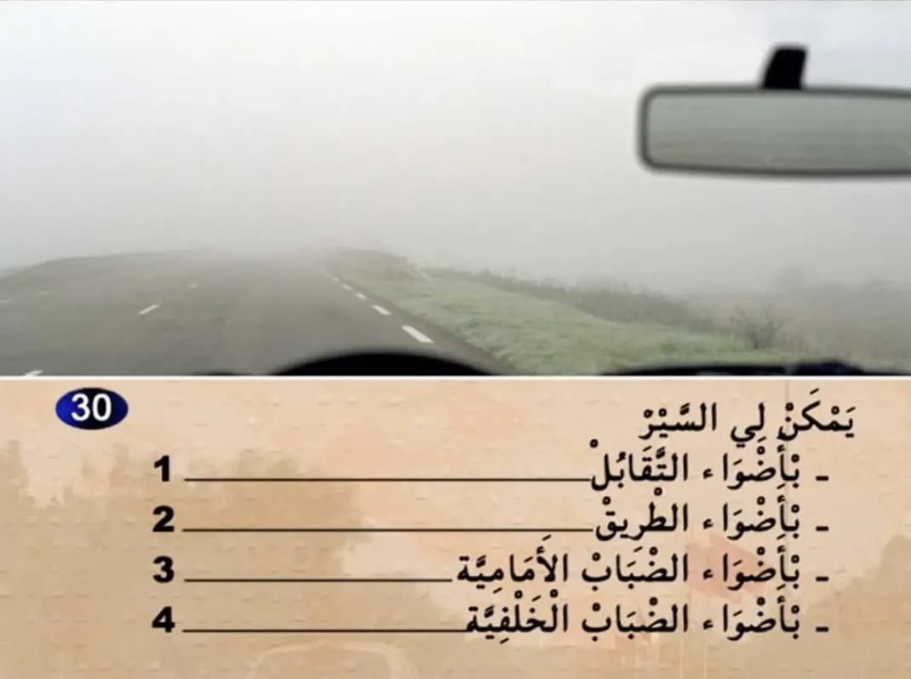
بيّن الجواب
الجواب الصحيح: 1 و 3 و 4
يوجد ضباب، وفي الضباب نقوم بالسّير بأضواء التّقابل و بأضواء الضباب الأمامية و بأضواء الضباب الخلفية.
السؤال 31
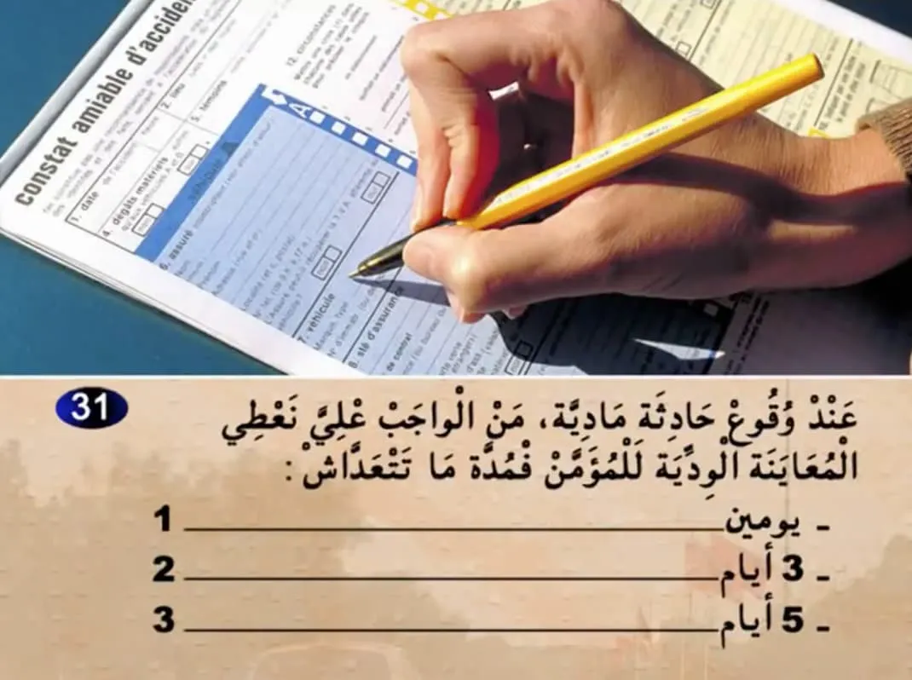
بيّن الجواب
الجواب الصحيح: 3
عند وقوع حادثة مادّية فمن الواجب عليّ أن أقوم بتقديم المعاينة الودّية لشركة التامين في مدة لا تتعدى 5 أيام.
السؤال 32
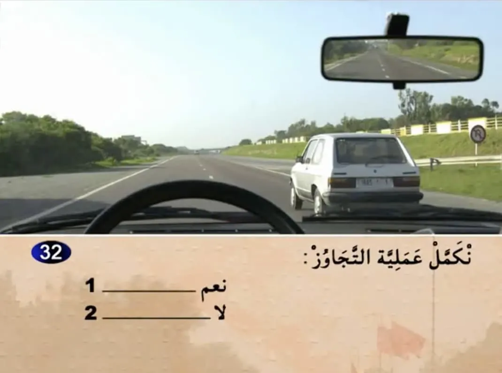
بيّن الجواب
الجواب الصحيح: 1
نتواجد في طريق ذات إتّجاه واحد كما يشير إليه التّشوير الأفقي الخط المتّصل على اليسار، كما أن التّشوير الأفقي الخط المتقطّع يسمح لي بالتّجاوز. إذن يمكنني إكمال عمليّة التّجاوز.
السؤال 33
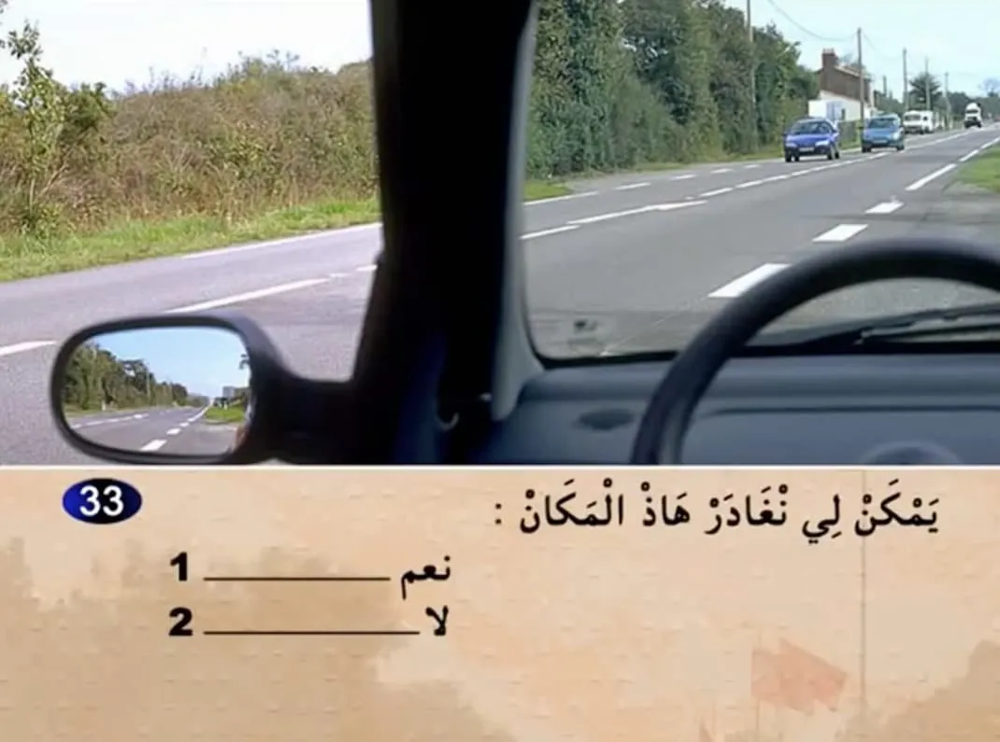
بيّن الجواب
الجواب الصحيح: 2
لا توجد سيارات قادمة من الخلف، لكن توجد سيارة في الاتّجاه المعاكس تستعد لعملية التّجاوز لسيارة أمامها وإلا سوف أتقابل معها في حالة مغادرة هذا المكان الان وهي تتجاوز السّيارة، لذلك لا يمكنني مغادرة هذا المكان الان.
السؤال 34
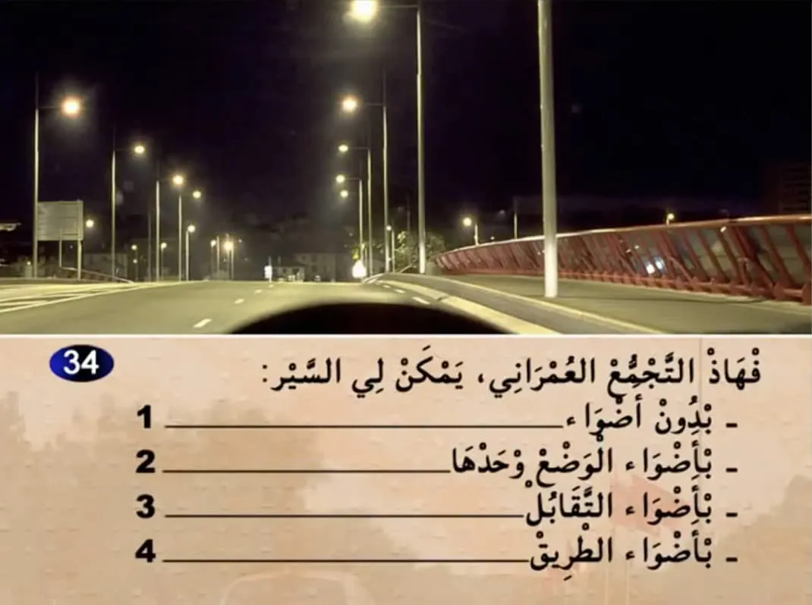
بيّن الجواب
الجواب الصحيح: 2 و 3
في هذا التّجمع العمراني ( يمكنني ) السّير ب أضواء الوضع وحدهم إذا كانت توجد إنارة الشارع تضيئ الطريق بشكل جيّد، كما أنه بإمكاني أيضا السّير بأضواء التّقابل.
السؤال 35
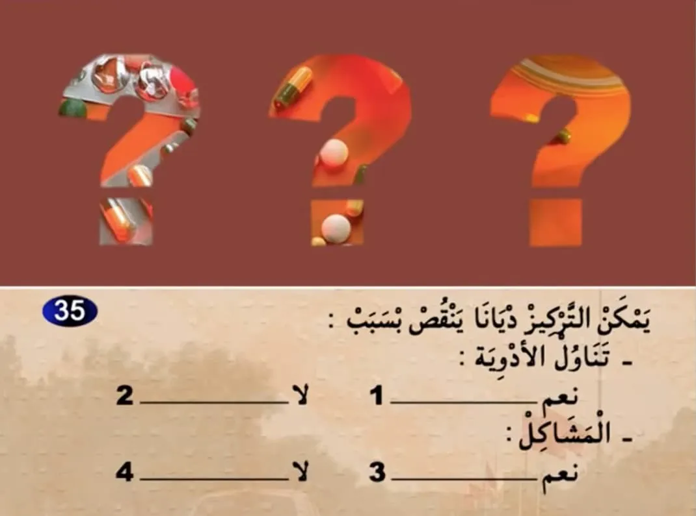
بيّن الجواب
الجواب الصحيح: 1 و 3
بالنسبة لنقصان التّركيز فيمكن أن يكون سببه تناول الأدوية، لأن بعض الأدوية تجلب النوم والتّعب إذن نقصان التّركيز، كما أن المشاكل يمكن أن تقلل من التّركيز، لأنه تركيزنا سوف يكون فقط في المشاكل وليس في الانتباه أثناء السياقة. إذن تناول الأدوية والمشاكل يعتبران من بين الأسباب التي تؤدي إلى نقص التّركيز.
السؤال 36
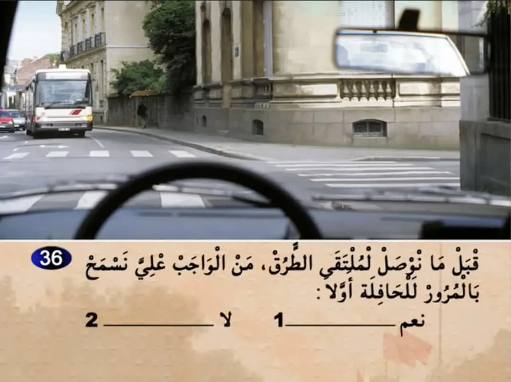
بيّن الجواب
الجواب الصحيح: 2
في ملتقى الطّرق الأسبقية لليمين عندما لا توجد إشارات طرقية تشير إلى عكس ذلك، في هذه الحالة أنا أتواجد على يمين الحافلة لأنها تريد الانعطاف على اليسار، يجب عليها هي إعطائي حق الأسبقية وليس أنا. إذن ليس من الواجب عليّ السماح بمرور الحافلة أولا.
السؤال 37
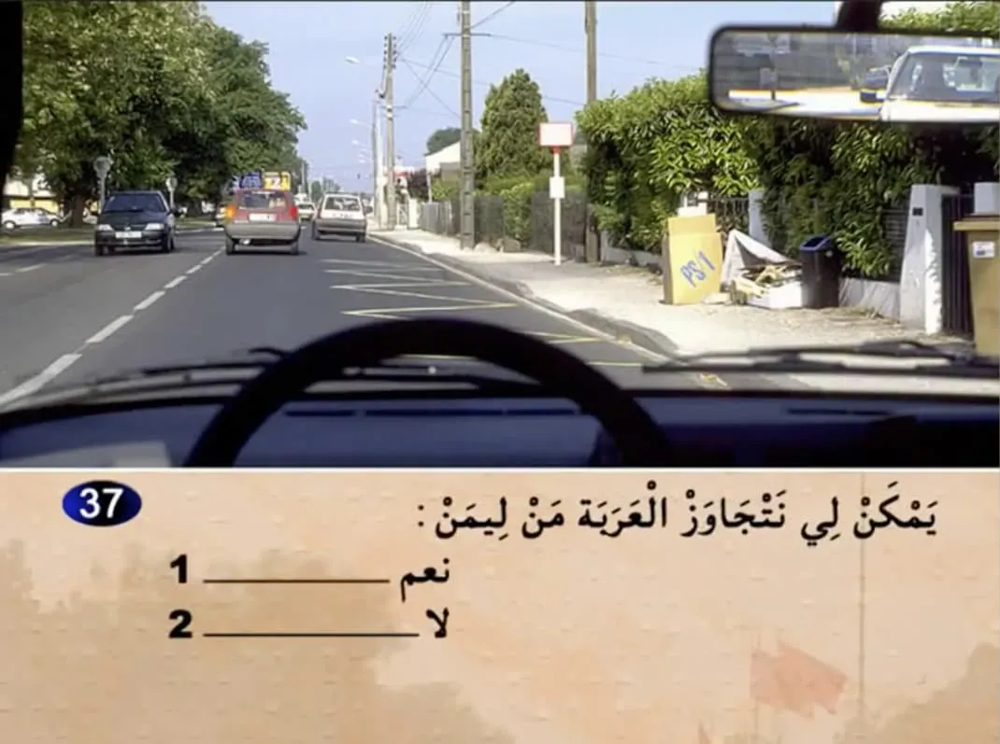
بيّن الجواب
الجواب الصحيح: 1
الحالة الوحيدة التي يمكنني فيها التّجاوز من الجهة اليمنى فهي هذه الحالة، عندما تريد عربة الانعطاف على اليسار فيمكنني تجاوزها من الجهة اليمنى، بالنسبة للخطوط المتواجدة على الطّّريق والتي تشير إلى مكان خاص بالحافلات فيمكنني استعمالها لعملية الّتّجاوز لا مشكلة في ذلك، فقط الوقوف والتوقّف فيها ممنوع لأنه مكان خاص. إذن يمكنني تجاوز العربة من الجهة اليمنى.
السؤال 38
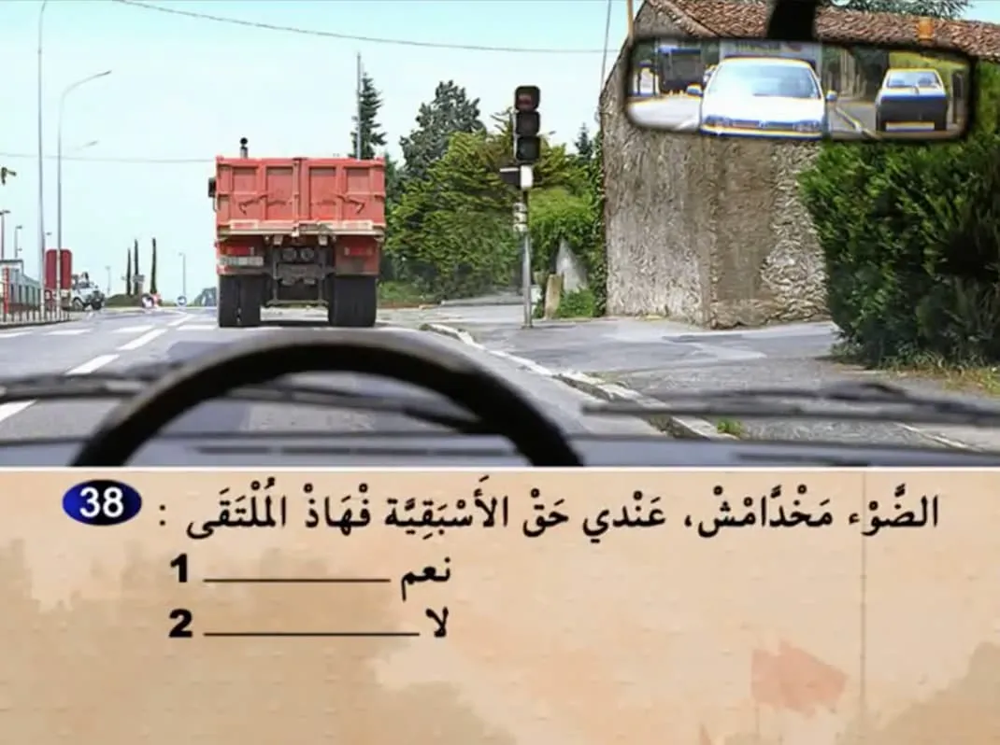
بيّن الجواب
الجواب الصحيح: 2
في ملتقى الطّرق وعندما لا تشتغل الإشارات الضّوئية ففي هذه الحالة نطبّق القاعدة العامة والتي تقول أن حق الأسبقية فهو للعربات القادمة من الجهة اليمنى. إذن في هذا الملتقى ليس لديّ حق الأسبقية.
السؤال 39
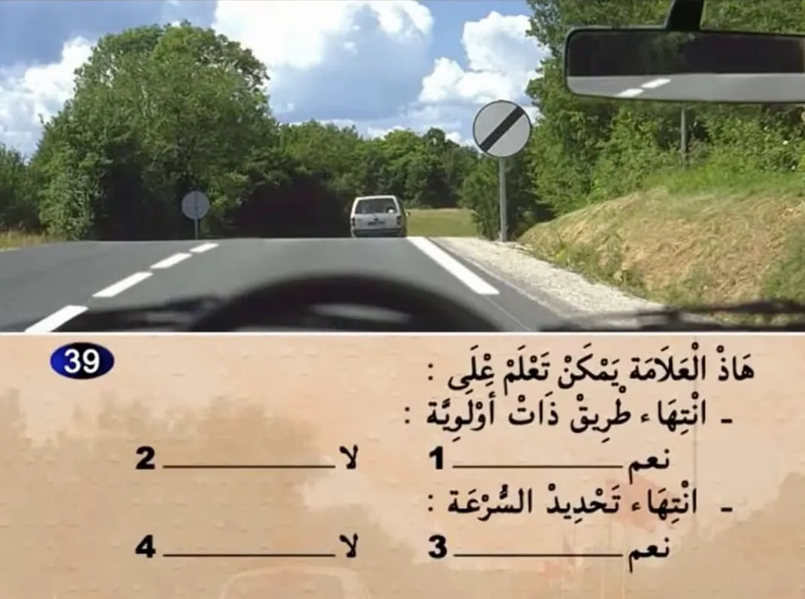
بيّن الجواب
الجواب الصحيح: 2 و 3
بالنسبة للإشارة الطّرقية فهي تشير إلى انتهاء تحديد السّرعة وليس إلى انتهاء طريق ذات أولوية.
السؤال 40
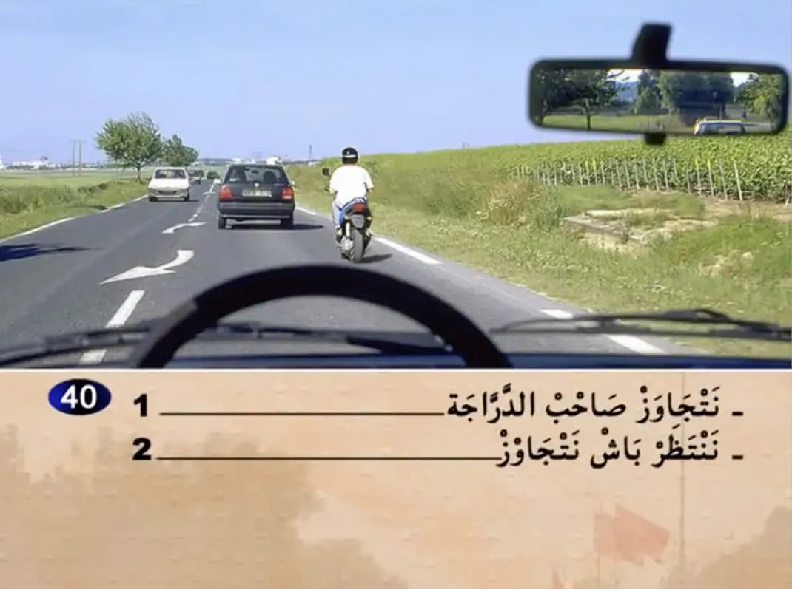
بيّن الجواب
الجواب الصحيح: 2
توجد سيارات قادمة من الاتّجاه المعاكس ولا يمكنني التّجاوز الان، لذلك يجب عليّ الانتظار لتجاوز صاحب الدّراجة.